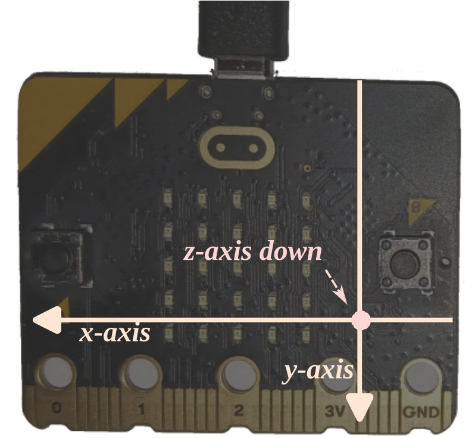

LED Compass
Trong phần này, chúng ta sẽ implement một la bàn sử dụng LED trên micro:bit. Giống như la bàn thật, la bàn LED của chúng ta phải chỉ về hướng Bắc. Nó sẽ làm điều đó bằng cách bật một trong các LED ở vòng ngoài cùng — LED được bật nên chỉ về hướng Bắc.
Từ trường có cả cường độ (magnitude), đo bằng Gauss hoặc Tesla, và hướng (direction). Magnetometer trên micro:bit đo cả cường độ lẫn hướng của từ trường bên ngoài, nhưng nó báo cáo sự phân rã (decomposition) của từ trường đó dọc theo các trục của nó.
Magnetometer có ba trục liên kết với nó. Khi board được giữ phẳng với các LED hướng lên trên và logo hướng về phía trước, trục X và Y trải trên mặt phẳng sàn nhà. Trục X chỉ về cạnh trái của board. Trục Y chỉ về cạnh dưới (cạnh card connector) của board. Trục Z chỉ "vào trong sàn nhà", tức là hướng xuống dưới: "ngược chiều" vì chip được gắn ở mặt sau. Đây là hệ tọa độ "tay phải". Tất cả hơi rối rắm vì các giá trị cường độ từ trường được báo cáo là các thành phần của vector từ trường.

Bạn đã có thể viết một chương trình liên tục in dữ liệu magnetometer trên console RTT từ chương I2C. Sau khi viết chương trình đó (examples/show-mag.rs), hãy xác định hướng Bắc ở vị trí hiện tại của bạn. Sau đó canh chỉnh MB2 theo hướng đó và quan sát xem các số đo X và Y của cảm biến trông như thế nào.
Bây giờ hãy xoay board 90 độ trong khi giữ nó song song với mặt đất. Bạn thấy giá trị X, Y và Z gì lần này? Sau đó xoay thêm 90 độ nữa. Bạn thấy giá trị gì?
Trong số hai chiếc MB2 tác giả có lúc viết bài này, một chiếc dường như có magnetometer bị hỏng một phần: trục Z bị lệch đến mức không dùng được. Đây thường là kết quả của việc MB2 bị tiếp xúc với từ trường mạnh tại một thời điểm nào đó ("hard iron error"). Crate lsm303agr hiện chưa hỗ trợ quy trình tự test hay hiệu chỉnh của nhà sản xuất. Nếu MB2 của bạn có vẻ không hoạt động, hãy bỏ qua sang chương tiếp theo.
Từ trường Bắc của Trái Đất là thứ phức tạp: nó khác so với Bắc thực sự ở hầu hết các nơi trên Trái Đất, đôi khi đáng kể. Nó có thể chỉ xuống mặt đất khá nhiều. Nó thay đổi theo thời gian. Nếu không tính đến tất cả những điều này, bạn sẽ không có được một chiếc la bàn rất chính xác ngay cả khi magnetometer MB2 của bạn hoàn hảo (nó không phải vậy). Máy tính NOAA của Mỹ này có thể được truy cập trên thiết bị di động của bạn để có ước tính tốt về Bắc thực sự cũng như Bắc từ; bạn có thể dùng máy tính UK BGS này để nhập vĩ độ, kinh độ và độ cao của bạn để có được cả declination và inclination. Tại vị trí của tôi, "declination" (sự khác biệt giữa Bắc thực và Bắc từ) là khoảng 15°; "inclination" là 67° đáng kinh ngạc xuống mặt đất.
Nhà sản xuất đề xuất một quy trình hiệu chỉnh phức tạp để tìm các điều chỉnh cho số đo magnetometer. Vì vậy la bàn trong chương này sẽ không thực sự chính xác. Bạn có thể tìm thêm thông tin, một bản implement hiệu chỉnh mẫu và một số đồ họa la bàn đẹp hơn trong phụ lục 3.
Magnitude (Cường độ từ trường)
Từ trường Trái Đất mạnh đến mức nào? Theo tài liệu về phương thức magnetic_field(), các giá trị x, y, z chúng ta nhận được tính bằng nanotesla. Điều đó có nghĩa là thứ duy nhất chúng ta phải tính để lấy cường độ của từ trường tính bằng nanotesla là độ lớn của vector 3D mà các giá trị x, y, z mô tả. Như bạn có thể nhớ từ trường học, đây đơn giản là:
use libm::sqrtf;
let magnitude = sqrtf(x * x + y * y + z * z);Rust không có các hàm toán học floating-point như sqrtf() trong core, nên chương trình no_std của chúng ta phải lấy implementation từ đâu đó. Chúng ta dùng crate libm cho việc này.
Kết hợp tất cả lại trong một chương trình (examples/magnitude.rs):
#![deny(unsafe_code)]
#![no_main]
#![no_std]
use cortex_m_rt::entry;
use embedded_hal::delay::DelayNs;
use panic_rtt_target as _;
use rtt_target::{rprintln, rtt_init_print};
use libm::sqrtf;
use microbit::{
hal::{twim, Timer},
pac::twim0::frequency::FREQUENCY_A,
};
use lsm303agr::{Lsm303agr, MagMode, MagOutputDataRate};
#[entry]
fn main() -> ! {
rtt_init_print!();
let board = microbit::Board::take().unwrap();
let i2c = { twim::Twim::new(board.TWIM0, board.i2c_internal.into(), FREQUENCY_A::K100) };
let mut timer0 = Timer::new(board.TIMER0);
let mut sensor = Lsm303agr::new_with_i2c(i2c);
sensor.init().unwrap();
sensor
.set_mag_mode_and_odr(&mut timer0, MagMode::HighResolution, MagOutputDataRate::Hz10)
.unwrap();
let mut sensor = sensor.into_mag_continuous().ok().unwrap();
loop {
while !sensor.mag_status().unwrap().xyz_new_data() {
timer0.delay_ms(1u32);
}
let (x, y, z) = sensor.magnetic_field().unwrap().xyz_nt();
let (x, y, z) = (x as f32, y as f32, z as f32);
let magnitude = sqrtf(x * x + y * y + z * z);
rprintln!("{} mG", magnitude / 100.0);
}
}Chạy với cargo run --example magnitude.
Chương trình này sẽ báo cáo cường độ (độ mạnh) của từ trường bằng nanotesla (nT) và milligauss (mG, trong đó 1 mG = 100 nT). Cường độ từ trường của Trái Đất nằm trong khoảng 250 mG đến 650 mG (cường độ thay đổi tùy theo vị trí địa lý) nên lý tưởng là bạn sẽ thấy giá trị gần đó. Giá trị của bạn có thể sai khá nhiều vì cảm biến chưa được hiệu chỉnh: xem phụ lục 3 để hiệu chỉnh. Với hiệu chỉnh, tôi thấy cường độ khoảng 340 mG.
Một số câu hỏi:
Khi không di chuyển board, bạn thấy giá trị gì? Bạn có luôn thấy cùng một giá trị không?
Nếu bạn xoay board, cường độ có thay đổi không? Lý thuyết nó có nên thay đổi không?
Thử thách
Chúng ta sẽ dùng một số toán học thú vị để lấy góc chính xác mà từ trường tạo với các trục X và Y của magnetometer. Điều này sẽ cho phép chúng ta xác định LED nào đang chỉ về hướng Bắc.
Chúng ta sẽ dùng hàm atan2. Hàm này trả về một góc trong khoảng -PI đến PI. Đồ họa dưới đây cho thấy cách đo góc này:

Mặc dù không được hiển thị rõ ràng, trong đồ thị này trục X chỉ về bên phải và trục Y chỉ lên trên. Lưu ý rằng hệ tọa độ của chúng ta bị xoay 180° so với đây.
Đây là starter code (trong templates/compass.rs). theta, tính bằng radian, đã được tính sẵn. Bạn cần chọn LED nào để bật dựa trên giá trị của theta.
#![deny(unsafe_code)]
#![no_main]
#![no_std]
use cortex_m_rt::entry;
use embedded_hal::delay::DelayNs;
use panic_rtt_target as _;
use rtt_target::rtt_init_print;
// You'll find these useful ;-).
use core::f32::consts::PI;
use libm::{atan2f, floorf};
use microbit::{
display::blocking::Display,
hal::{Timer, twim},
pac::twim0::frequency::FREQUENCY_A,
};
use lsm303agr::{Lsm303agr, MagMode, MagOutputDataRate};
#[entry]
fn main() -> ! {
rtt_init_print!();
let board = microbit::Board::take().unwrap();
let i2c = { twim::Twim::new(board.TWIM0, board.i2c_internal.into(), FREQUENCY_A::K100) };
let mut timer0 = Timer::new(board.TIMER0);
let mut display = Display::new(board.display_pins);
let mut sensor = Lsm303agr::new_with_i2c(i2c);
sensor.init().unwrap();
sensor.set_mag_mode_and_odr(
&mut timer0,
MagMode::HighResolution,
MagOutputDataRate::Hz10,
).unwrap();
let mut sensor = sensor.into_mag_continuous().ok().unwrap();
let mut leds = [[0u8; 5]; 5];
// Indexes of the 16 LEDs to be used in the display, and their
// compass directions.
#[rustfmt::skip]
let indices = [
(2, 0) /* W */, (3, 0) /* W-SW */, (3, 1) /* SW */, (4, 1) /* S-SW */,
(4, 2) /* S */, (4, 3) /* S-SE */, (3, 3) /* SE */, (3, 4) /* E-SE */,
(2, 4) /* E */, (1, 4) /* E-NE */, (1, 3) /* NE */, (0, 3) /* N-NE */,
(0, 2) /* N */, (0, 1) /* N-NW */, (1, 1) /* NW */, (1, 0) /* W-NW */,
];
loop {
// Measure the magnetic field.
let (x, y) = todo!();
// Get an angle between -180° and 180° from the x axis.
let theta = atan2f(y as f32, x as f32);
// Figure out what LED index to blink.
let index = todo!();
// Blink the given LED.
let (r, c) = indices[index];
leds[r][c] = 255u8;
display.show(&mut timer0, leds, 50);
leds[r][c] = 0u8;
display.show(&mut timer0, leds, 50);
}
}Suggestions/tips:
- Một vòng tròn = 360 độ.
PIradian tương đương với 180 độ.- Nếu
thetabằng 0, bạn đang chỉ về hướng nào? - Nếu
thetathay vào đó rất gần với 0, bạn đang chỉ về hướng nào? - Nếu
thetatiếp tục tăng, ở giá trị nào bạn nên thay đổi hướng?
Lời giải
Đây là lời giải của tôi (trong src/main.rs):
#![deny(unsafe_code)]
#![no_main]
#![no_std]
use cortex_m_rt::entry;
use embedded_hal::delay::DelayNs;
use panic_rtt_target as _;
use rtt_target::rtt_init_print;
use core::f32::consts::PI;
use libm::{atan2f, floorf};
use microbit::{
display::blocking::Display,
hal::{twim, Timer},
pac::twim0::frequency::FREQUENCY_A,
};
use lsm303agr::{Lsm303agr, MagMode, MagOutputDataRate};
#[entry]
fn main() -> ! {
rtt_init_print!();
let board = microbit::Board::take().unwrap();
let i2c = { twim::Twim::new(board.TWIM0, board.i2c_internal.into(), FREQUENCY_A::K100) };
let mut timer0 = Timer::new(board.TIMER0);
let mut display = Display::new(board.display_pins);
let mut sensor = Lsm303agr::new_with_i2c(i2c);
sensor.init().unwrap();
sensor
.set_mag_mode_and_odr(&mut timer0, MagMode::HighResolution, MagOutputDataRate::Hz10)
.unwrap();
let mut sensor = sensor.into_mag_continuous().ok().unwrap();
let mut leds = [[0u8; 5]; 5];
// 16 vị trí LED trên vòng ngoài, bắt đầu từ hướng Tây, đi theo chiều kim đồng hồ
let indices = [
(2, 0), /* W */
(3, 0), /* W-SW */
(3, 1), /* SW */
(4, 1), /* S-SW */
(4, 2), /* S */
(4, 3), /* S-SE */
(3, 3), /* SE */
(3, 4), /* E-SE */
(2, 4), /* E */
(1, 4), /* E-NE */
(1, 3), /* NE */
(0, 3), /* N-NE */
(0, 2), /* N */
(0, 1), /* N-NW */
(1, 1), /* NW */
(1, 0), /* W-NW */
];
loop {
while !sensor.mag_status().unwrap().xyz_new_data() {
timer0.delay_ms(1u32);
}
let (x, y, _) = sensor.magnetic_field().unwrap().xyz_nt();
// theta: góc từ trục X, khoảng -PI đến PI
let theta = atan2f(y as f32, x as f32);
// Chia vòng tròn thành 32 phần (mỗi phần PI/16 radian), lấy nửa
let seg = floorf(16.0 * theta / PI) as i8;
let index = if seg >= 15 || seg <= -15 {
8 // East
} else if seg >= 0 {
(seg / 2) as usize
} else {
((31 + seg) / 2) as usize
};
let (r, c) = indices[index];
leds[r][c] = 255u8;
display.show(&mut timer0, leds, 50);
leds[r][c] = 0u8;
display.show(&mut timer0, leds, 50);
}
}